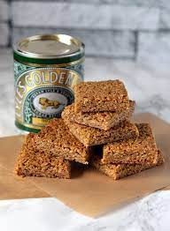

Flapjacks

Description
Soft, chewy flapjacks. Simple yet effective, these will be gone in hours!
Ingredients
- 250g oats
- 125g butter
- 125g light brown sugar
- 3tbsp golden syrup
Steps
- Melt butter and sugar in saucepan
- Add in syrup
- Pour in and mix oats
- Put mixture in a square tin
- Cook until golden brown for approx. 15 minutes at 180 fan.